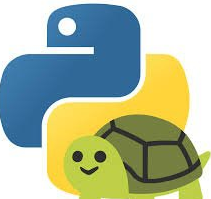
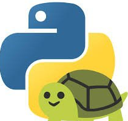

Türkçe Odaklı gidiyorum ama ingilizce de Ekliycem
-------------------------------------------------------------------
Türkçe |
English
blog siteme hoş geldiniz ürettiğim içerikleri sizlerle paylaşıyorum lütfen desteklerinizi esirgemeyin ..
Discord Sunucusu Linki: discord.gg/qCENjTpU
Sistemim : Arch Linux>Godot-Blender/Gimp
| Krita | Inkscape | LibreSprite/Kdenlive
Kullandığım Python Kütüphanaleri
PySimpleGUI |
Ursina Engine  |
PyGame
|
PyGame  |
Turtle  |
|
Turtle  |
GnuChanOs (Hayali Gnu/Linux Dağıtımı) |
Youtube Kanalı Destek Please...
Görmek için Tıkla |
GnuchanOS ProgramlarıGörmek için Tıkla |
Deneme Oyunlar
Görmek için Tıkla |
ücretsiz Modellerim
Görmek için Tıkla |
Python-Chan Ders NotlarıGörmek için Tıkla |
program örnekleri
C-Chan VS PythonChan
Görmek için Tıkla |